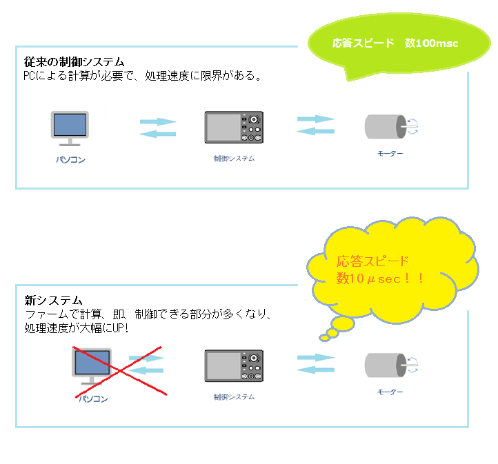

過去に頂いたご依頼の中に、市販の汎用AD/DAでは対応できないような案件が幾つかありました。その都度、専用のハードウェア、ファームウェアから開発してきましたが多大なコストがかかり、コストの都合で断念せざるを得ない案件もあり悔しい思いをしていました。
そこで、汎用制御ボードの開発を決意し、構想と開発の末に誕生したのがSUI-01です。
SUI-01によって、これまで難しかった「複雑な制御を特に高速に行う」ことが可能になった上に開発にかかる全体的なコストのカットも実現しました。
ハードウェアはARM CPUに計測用のAD、制御用のDAをつけた汎用制御ボードです。
数十μsecの等間隔でセンサー等の信号をAD変換し、必要な計算処理を行い、DAにて制御すべき電圧を出力するだけのボードです。
最大のメリットは… 高速で高機能、かつ安価な制御装置を構成できる！
過去に頂いたご依頼の中に、市販の汎用AD/DAでは対応できないような案件が幾つかありました。その都度、専用のハードウェア、ファームウェアから開発してきましたが多大なコストがかかり、コストの都合で断念せざるを得ない案件もあり悔しい思いをしていました。
そこで、汎用制御ボードの開発を決意し、構想と開発の末に誕生したのがSUI-01です。
SUI-01によって、これまで難しかった「複雑な制御を特に高速に行う」ことが可能になった上に開発にかかる全体的なコストのカットも実現しました。
FPGAによる多チャネルのAD/DAにより、50μsecでの同期サンプリングが可能。（倍速でのオーバーサンプリング処理等も可能）
AD 16ch (18bit) // DA 1ch (18bit) + 8ch (16bit)
最大16ボードでの同期運転が可能
AD Max.256Ch, DA Max.16Ch[18bit] + 128Ch[16bit]
高速な浮動小数点ユニット実装のメインCPU(M4)と大容量RAMにより、高度な制御が可能。
メインCPU(M4)の他、通信専用CPU(M0)によりパソコンとの4ch高速通信を実現。
実績のある基本ルーチン群をベースに、ユーザー様の要望に合わせた制御をファームで実現可能。
パソコンで制御装置からデータを吸い上げ計算し、制御装置に新しいデータを送るというフェーズをなくすことによって、リアルタイム性の強化された制御を可能としています。

特性が大きく変わる試験でも、計測データを評価しゲイン等の係数を動的に変化させることで、迅速かつ安定した制御を可能にします。
単なる波形発生ではなく、AD, DIOの状態により任意の波形を発生させるファンクションジェネレータとして機能します。
計算のための各種パラメータをファームに送り込み、ファームウェア内で座標変換計算を行い制御します。SUI-01を2枚以上使うことにより、多軸制御も可能となります。（最大16台）
電動、油圧アクチュエータのPID処理を含む高度な制御が可能です。
「シーケンサーと汎用AD/DA＋パソコン」では目的が達成できず、特別なハードウェア開発を必要としていたケースでも、SUI-01とファームウェアの組み合わせにより、ハードウェア設計開発フェーズを不要にします。